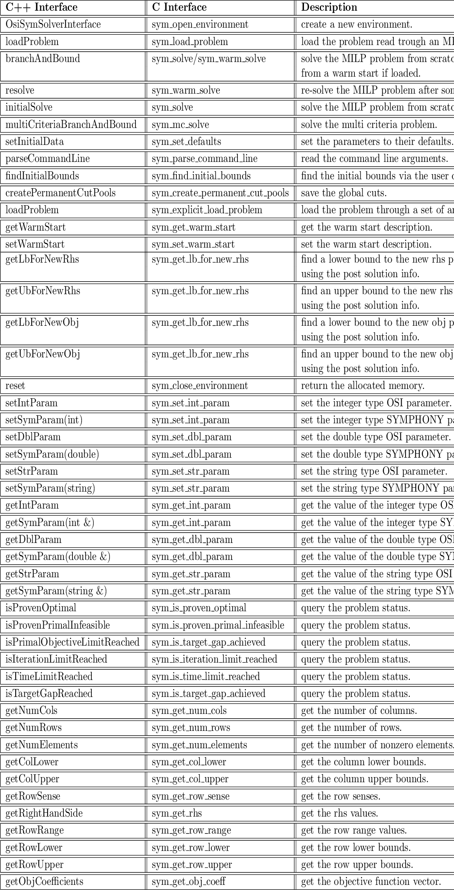
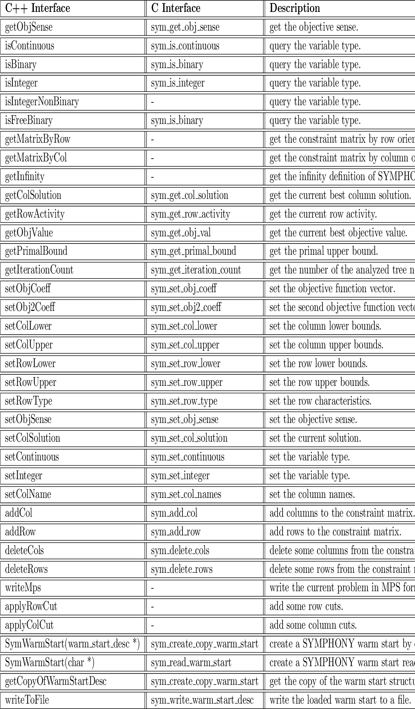

Next: User Callback API Up: Reference Previous: sym_get_ub_for_new_obj Contents
SYMPHONY's C++ interface is derived from COIN-OR's Open Solver Interface (OSI). The OSI methods are implemented simply as wrapped calls to the SYMPHONY C callable library just described. For instance, when an instance of the OSI interface class is constructed, a call is made to sym_open_environment() and a pointer to the environment is stored in the class and when the OSI object is destroyed, sym_close_environment is called to destroy the environment object. Most subsequent calls within the class can then be made without any arguments. To fully support SYMPHONY's capabilities, we have extended the OSI interface to include some other methods not in the base class. For example, we added calls equivalent to our sym_parse_command_line() and sym_find_initial_bounds(). Additionally, SYMPHONY has a warm start class derived from the CoinWarmStart base class to support the new functionalities of the MILP warm starting such as sym_get_warm_start and sym_set_warm_start. They are also implemented as wrapped calls to the C interface library.
In order to have the whole list of the methods and information regarding their usage, see the OSI SYMPHONY interface and SYMPHONY warm start header files (OsiSymSolverInterface.hpp and SymWarmStart.hpp). Here, we will give the table of the C library equivalent calls of the C++ interface routines with brief descriptions:

